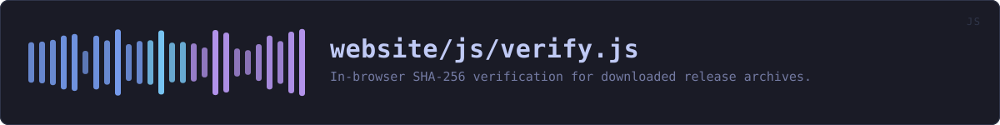

website/js/verify.js
the website's source · 211 lines · read it on GitHub
WHAT IT DOES
In-browser SHA-256 verification for downloaded release archives.
# The file never leaves your machine
Hashing happens locally through WebCrypto (crypto.subtle.digest), which is built into the browser. The file is read with FileReader, hashed in memory, and discarded. There is no upload, no fetch, no XHR, and no server that could receive it -- you can confirm that by reading this file, which is the whole of the implementation.
# Why it streams
A release archive can be tens of megabytes and WebCrypto has no incremental digest API, so the whole file must be in memory at once for digest(). Reading it in chunks first lets the progress bar move and keeps the tab responsive, rather than freezing until the browser finishes.
IN PLAIN WORDS
This is the box on the verify page where you drop a file you have downloaded, and it tells you whether it is the one that was published.
Your file never leaves your computer. The browser does the arithmetic itself, on the file sitting on your disk, and this file is the whole of how -- there is no upload in it, and you can read it and see that.
It reads a big file in pieces rather than all at once, so a large download does not make the page freeze while it works.
WHAT CALLS WHAT
Read out of the source: an edge means the callee’s name appears, called, inside the caller’s body. A syntactic reading, not a resolved one.
| Function | Line |
|---|---|
hex | 37 |
readFile | 58 |
next | 88 |
digestAvailable | 106 |
expectedFrom | 115 |
compare | 129 |
got | 131 |
handle | 146 |